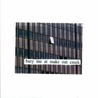

lush
chamber pop, 2012
- liquid smooth (2:49)
- wife (2:40)
- abbey (2:47)
- brand new city (2:13)
- eric (3:18)
- bag of bones (4:36)
- door (2:13)
- pearl diver (2:44)
- real men (2:42)
|
retired from sad, new career in business
orchestral pop, 2013
- goodby, my danish sweetheart (2:17)
- square (3:10)
- strawberry blond (1:54)
- humpty (3:21)
- i want you (3:03)
- shame (2:24)
- because dreaming costs money, my dear (3:05)
- circle (2:51)
- class of 2013 (1:49)
|

bury me at makeout creek
guitar rock, 2014
- texas reznikoff (2:12)
- townie (3:25)
- first love / late spring (4:38)
- francis forever (2:29)
- i don't smoke (3:18)
- jobless monday (2:06)
- drunk walk home (2:35)
- i will (2:54)
- carry me out (3:53)
- last words of a shooting star (2:44)
|
puberty 2
indie rock, 2011
- happy (3:40)
- dan the dancer (2:25)
- once more to see you (3:01)
- fireworks (2:37)
- your best american girl (3:32)
- i bet on losing dogs (2:50)
- my body's made of crushed little stars (1:56)
- thursday girl (3:08)
- a loving feeling (1:32)
- crack baby (4:52)
- a burning hill (1:49)
|
be the cowboy
pop, 2018
- geyser (2:23)
- why didn't you stop me? (2:21)
- old friend (1:52)
- a pearl (2:36)
- lonesome love (1:50)
- remember my name (2:15)
- me and my husband (2:17)
- come into the water (1:23)
- nobody (3:13)
- pink in the night (2:16)
- a horse named cold air (2:03)
- washing machine heart (2:08)
- blue light (1:43)
- two slow dancers (3:59)
|
laurel hell
synth-pop, 2022
- valentine, texas (2:35)
- working for the knife (2:38)
- stay soft (3:16)
- everyone (3:47)
- heat lightning (2:51)
- the only heartbreaker (3:04)
- love me more (3:32)
- there's nothing left for you (2:52)
- should've been me (3:11)
- i guess (2:15)
- that's our lamp (2:24)
|